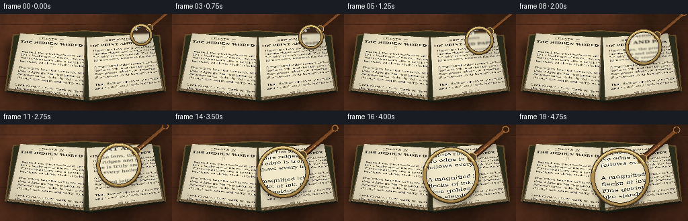
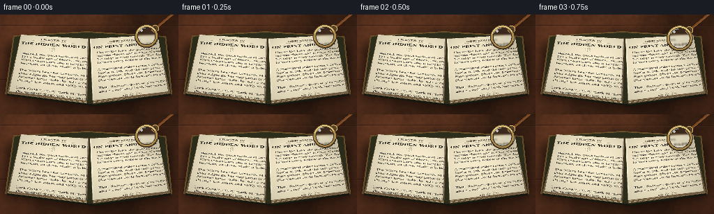

CODING AGENTS AS PIXEL WORLD MODELS
traex/GPT-5.6-Sol · phygen_066
点击播放 · 原生 RGB 像素
逐轮保存的候选
回放视频、检查图与代码变化。
每份候选均可单独播放。实际图片检查记录在下方工具轨迹中。
候选 01播放与检查图
点击播放 · 原生 RGB 像素


展开代码变化
--- 上一保存版本
+++ 本次保存版本
@@ -0,0 +1,298 @@
+from pathlib import Path
+import math
+import numpy as np
+import cv2
+from PIL import Image, ImageDraw, ImageFont, ImageFilter
+import artifact_io
+
+# Deterministic, procedural text-to-video render.
+W, H, N = 256, 144, 20
+S = 4
+WW, HH = W*S, H*S
+ROOT = Path(__file__).resolve().parent
+rng = np.random.default_rng(6601)
+
+SERIF = "/usr/share/fonts/truetype/dejavu/DejaVuSerif.ttf"
+SERIF_B = "/usr/share/fonts/truetype/dejavu/DejaVuSerif-Bold.ttf"
+SERIF_I = "/usr/share/fonts/truetype/dejavu/DejaVuSerif-Italic.ttf"
+
+
+def font(path, size):
+ return ImageFont.truetype(path, size)
+
+
+def wood_background():
+ y, x = np.mgrid[0:HH, 0:WW]
+ # Dark walnut with directional grain, gently lit from the upper left.
+ n = rng.normal(0, 1, (HH, WW)).astype(np.float32)
+ n = cv2.GaussianBlur(n, (0, 0), 1.5*S)
+ n = (n - n.min()) / (n.max() - n.min()) - .5
+ grain = (np.sin(x*.020/S + 1.8*np.sin(y*.010/S)) +
+ .42*np.sin(x*.057/S + y*.006/S) +
+ .2*np.sin(x*.15/S + 2*np.sin(y*.014/S)))
+ light = 1.0 - .30*np.sqrt(((x/WW)-.25)**2 + ((y/HH)-.18)**2)
+ base = np.zeros((HH, WW, 3), np.float32)
+ base[..., 0] = 83 + 15*grain + 18*n
+ base[..., 1] = 47 + 8*grain + 12*n
+ base[..., 2] = 29 + 5*grain + 8*n
+ base *= light[..., None]
+ base = np.clip(base, 0, 255).astype(np.uint8)
+ im = Image.fromarray(base)
+ d = ImageDraw.Draw(im, 'RGBA')
+ # Seams and hand-drawn fine grain.
+ for yy in (15, 93):
+ d.line([(0, yy*S), (WW, (yy+1)*S)], fill=(31, 17, 12, 95), width=S)
+ d.line([(0, (yy+2)*S), (WW, (yy+2)*S)], fill=(149, 92, 55, 25), width=1*S)
+ rr = np.random.default_rng(91)
+ for _ in range(24):
+ y0 = int(rr.uniform(4, H-4)*S)
+ x0 = int(rr.uniform(-20, 180)*S)
+ length = int(rr.uniform(35, 150)*S)
+ pts=[]
+ for j in range(9):
+ xx=x0 + length*j/8
+ yy=y0 + math.sin(j*.9+rr.uniform(-.2,.2))*rr.uniform(.2,1.0)*S
+ pts.append((xx,yy))
+ d.line(pts, fill=(44,23,15,int(rr.uniform(18,42))), width=max(1,S//2))
+ # small knot, mostly hidden but lends realism
+ d.ellipse((235*S, 103*S, 265*S, 119*S), outline=(38,19,12,35), width=S)
+ d.ellipse((242*S, 107*S, 257*S, 115*S), outline=(138,76,40,22), width=S)
+ return im
+
+
+def make_page(side):
+ pw, ph = 620, 820
+ yy, xx = np.mgrid[0:ph, 0:pw]
+ paper_noise = rng.normal(0, 2.0, (ph, pw))
+ paper_noise = cv2.GaussianBlur(paper_noise.astype(np.float32), (0,0), .45)
+ edge = 1 - .075*((xx-pw/2)/(pw/2))**2 - .04*((yy-ph/2)/(ph/2))**2
+ arr=np.empty((ph,pw,3), np.float32)
+ arr[...,0]=(239+paper_noise)*edge
+ arr[...,1]=(228+paper_noise*.85)*edge
+ arr[...,2]=(197+paper_noise*.55)*edge
+ arr=np.clip(arr,0,255).astype(np.uint8)
+ im=Image.fromarray(arr)
+ d=ImageDraw.Draw(im,'RGBA')
+ # Fine paper fibers and foxing, subtle at normal view and visible in lens.
+ pr=np.random.default_rng(15 if side=='left' else 16)
+ for _ in range(210):
+ x0=int(pr.uniform(18,pw-18)); y0=int(pr.uniform(10,ph-10))
+ ln=int(pr.uniform(3,16)); col=(117,89,57,int(pr.uniform(9,24)))
+ d.line((x0,y0,x0+ln,y0+pr.uniform(-1.3,1.3)),fill=col,width=1)
+ for _ in range(38):
+ x0=int(pr.uniform(20,pw-20)); y0=int(pr.uniform(20,ph-20)); r=pr.choice([1,1,2,3])
+ d.ellipse((x0-r,y0-r,x0+r,y0+r),fill=(126,82,43,int(pr.uniform(8,19))))
+
+ ink=(45,40,33,235)
+ muted=(67,57,43,210)
+ if side=='left':
+ d.text((pw//2,38),'CHAPTER IV',font=font(SERIF_B,30),fill=muted,anchor='ma')
+ d.line((118,81,pw-118,81),fill=(92,72,48,150),width=2)
+ d.text((pw//2,101),'THE HIDDEN WORLD',font=font(SERIF_B,47),fill=(37,32,26,245),anchor='ma')
+ # decorative botanical sprig
+ d.line((pw//2,170,pw//2,230), fill=(87,76,53,170), width=2)
+ for k in range(5):
+ y0=180+k*10
+ sgn=-1 if k%2 else 1
+ xa, xb = pw//2+sgn*2, pw//2+sgn*24
+ d.ellipse((min(xa,xb), y0-7, max(xa,xb), y0+4), outline=(87,76,53,145),width=2)
+ lines=[
+ 'Beneath the quiet surface of each page',
+ 'lies a landscape of fibres, ink, and time.',
+ 'What seems from afar a simple printed line',
+ 'becomes, on closer study, a living texture.',
+ '',
+ 'The letters bear the pressure of the press;',
+ 'their edges gather tiny pools of darkness.',
+ 'Between them, pale threads cross and wander',
+ 'through the warm and softly weathered paper.',
+ '',
+ 'Look closely: every mark preserves a story.',
+ 'The smallest detail waits to be discovered.'
+ ]
+ start=267
+ else:
+ d.text((pw//2,41),'OBSERVATIONS',font=font(SERIF_B,31),fill=muted,anchor='ma')
+ d.line((98,84,pw-98,84),fill=(92,72,48,145),width=2)
+ d.text((pw//2,106),'ON PRINT AND PAPER',font=font(SERIF_B,44),fill=(37,32,26,245),anchor='ma')
+ lines=[
+ 'Under the lens, the printed word opens into',
+ 'minute ridges and islands of settled pigment.',
+ 'No edge is truly smooth. The dark impression',
+ 'follows every hollow in the woven sheet.',
+ '',
+ 'A magnified letter reveals delicate fractures,',
+ 'flecks of ink, and the soft grain beneath it.',
+ 'Fine golden fibres run between the sentences',
+ 'like slender roots beneath an ancient path.',
+ '',
+ 'Thus distance gives way to patient attention,',
+ 'and an ordinary book becomes extraordinary.'
+ ]
+ start=187
+ body=font(SERIF,34)
+ italic=font(SERIF_I,27)
+ for i,line in enumerate(lines):
+ y0=start+i*47
+ if line:
+ d.text((50,y0),line,font=body,fill=ink)
+ # Footer and page number
+ d.line((245,776,375,776),fill=(100,79,55,105),width=1)
+ d.text((pw//2,788), 'â 84 â' if side=='left' else 'â 85 â',font=italic,fill=(74,63,47,180),anchor='ma')
+ return np.array(im)
+
+
+def alpha_layer_blur(draw_fn, blur):
+ lay=Image.new('RGBA',(WW,HH),(0,0,0,0)); draw_fn(ImageDraw.Draw(lay,'RGBA'))
+ if blur: lay=lay.filter(ImageFilter.GaussianBlur(blur))
+ return lay
+
+
+def warp_page(scene, page, quad):
+ sh,sw=page.shape[:2]
+ src=np.float32([[0,0],[sw-1,0],[sw-1,sh-1],[0,sh-1]])
+ dst=np.float32([[x*S,y*S] for x,y in quad])
+ M=cv2.getPerspectiveTransform(src,dst)
+ warped=cv2.warpPerspective(page,M,(WW,HH),flags=cv2.INTER_CUBIC,borderMode=cv2.BORDER_CONSTANT,borderValue=(0,0,0))
+ mask=cv2.warpPerspective(np.full((sh,sw),255,np.uint8),M,(WW,HH),flags=cv2.INTER_LINEAR)
+ a=(mask.astype(np.float32)/255.)[...,None]
+ out=np.array(scene).astype(np.float32)*(1-a)+warped.astype(np.float32)*a
+ return Image.fromarray(np.clip(out,0,255).astype(np.uint8))
+
+
+def build_scene():
+ scene=wood_background().convert('RGBA')
+ # Broad book shadow.
+ shadow=Image.new('RGBA',(WW,HH),(0,0,0,0))
+ sd=ImageDraw.Draw(shadow,'RGBA')
+ sd.polygon([(8*S,42*S),(124*S,24*S),(246*S,42*S),(248*S,119*S),(139*S,136*S),(5*S,119*S)],fill=(10,5,3,150))
+ shadow=shadow.filter(ImageFilter.GaussianBlur(7*S))
+ scene=Image.alpha_composite(scene,shadow)
+ d=ImageDraw.Draw(scene,'RGBA')
+ # A worn dark leather cover visible beneath the paper.
+ cover=[(19*S,30*S),(125*S,24*S),(238*S,31*S),(247*S,115*S),(137*S,132*S),(7*S,115*S)]
+ d.polygon(cover,fill=(45,45,28,255),outline=(104,79,42,255),width=2*S)
+ d.line([(10*S,115*S),(136*S,131*S),(245*S,115*S)],fill=(23,25,16,220),width=3*S)
+ # stacked page edges
+ for k in range(5,0,-1):
+ c=(178+k*6,164+k*6,128+k*5,255)
+ d.polygon([(29*S,(31+k*.6)*S),(127*S,(34+k*.2)*S),(125*S,(124+k*.9)*S),((14-k*.8)*S,(111+k*.6)*S)],fill=c,outline=(114,94,67,145),width=S)
+ d.polygon([(129*S,(34+k*.2)*S),(226*S,(31+k*.6)*S),((241+k*.7)*S,(111+k*.6)*S),(133*S,(124+k*.9)*S)],fill=c,outline=(114,94,67,145),width=S)
+ # Main printed leaves.
+ scene=warp_page(scene.convert('RGB'),make_page('left'),[(30,29),(127,35),(124,124),(13,111)]).convert('RGBA')
+ scene=warp_page(scene.convert('RGB'),make_page('right'),[(129,35),(226,29),(241,111),(133,124)]).convert('RGBA')
+ # Page edge, central gutter and gentle highlights establish the open-book fold.
+ ov=Image.new('RGBA',(WW,HH),(0,0,0,0)); od=ImageDraw.Draw(ov,'RGBA')
+ od.line([(13*S,111*S),(124*S,124*S)],fill=(105,81,53,110),width=S)
+ od.line([(133*S,124*S),(241*S,111*S)],fill=(103,79,50,110),width=S)
+ od.line([(127*S,35*S),(124*S,124*S)],fill=(69,51,35,130),width=3*S)
+ od.line([(130*S,35*S),(133*S,124*S)],fill=(255,248,218,85),width=2*S)
+ # translucent warm illumination across page center
+ scene=Image.alpha_composite(scene,ov)
+ arr=np.array(scene.convert('RGB')).astype(np.float32)
+ y,x=np.mgrid[0:HH,0:WW]
+ vign=np.clip(1.08-.22*np.sqrt(((x/WW)-.47)**2+((y/HH)-.47)**2),.82,1.06)
+ arr=np.clip(arr*vign[...,None],0,255).astype(np.uint8)
+ return arr
+
+BASE=build_scene()
+
+
+def smoothstep(v): return v*v*(3-2*v)
+
+
+def draw_lens(frame, idx):
+ q=idx/(N-1)
+ t=smoothstep(q)
+ # The glass descends from the upper-right: its apparent diameter increases substantially.
+ cx=(210 - 55*t + 1.0*math.sin(q*math.pi))*S
+ cy=(31 + 48*t)*S
+ r=(17 + 27*t)*S
+ scale=1.10 + .88*t
+ angle=-0.70 # handle points toward upper right
+ ux,uy=math.cos(angle),math.sin(angle)
+
+ im=Image.fromarray(frame).convert('RGBA')
+ # Contact shadow tightens and strengthens as glass approaches the page.
+ sh=Image.new('RGBA',(WW,HH),(0,0,0,0)); sd=ImageDraw.Draw(sh,'RGBA')
+ off=(7.5-4.3*t)*S
+ sx,sy=cx+off*.55,cy+off
+ rr=r*1.02
+ sd.ellipse((sx-rr,sy-rr,sx+rr,sy+rr),fill=(20,13,8,int(32+58*t)))
+ hp0=(cx+ux*(r*.91)+off*.55,cy+uy*(r*.91)+off)
+ hp1=(cx+ux*(r+(39+24*t)*S)+off*.55,cy+uy*(r+(39+24*t)*S)+off)
+ sd.line([hp0,hp1],fill=(18,10,6,int(42+45*t)),width=int((6+4*t)*S))
+ sh=sh.filter(ImageFilter.GaussianBlur((5.8-3.1*t)*S))
+ im=Image.alpha_composite(im,sh)
+
+ # Refract/magnify the underlying scene inside the circular optical element.
+ x0=max(0,int(cx-r-3*S)); x1=min(WW,int(cx+r+3*S)+1)
+ y0=max(0,int(cy-r-3*S)); y1=min(HH,int(cy+r+3*S)+1)
+ ys,xs=np.mgrid[y0:y1,x0:x1].astype(np.float32)
+ dx=xs-cx; dy=ys-cy
+ rad=np.sqrt(dx*dx+dy*dy)
+ rn=np.clip(rad/r,0,1)
+ # Mild pincushion at the glass rim, while the center is truly magnified.
+ local=(1.0/scale)*(1 + .12*rn**2)
+ mapx=(cx+dx*local).astype(np.float32)
+ mapy=(cy+dy*local).astype(np.float32)
+ source=BASE
+ patch=cv2.remap(source,mapx,mapy,cv2.INTER_CUBIC,borderMode=cv2.BORDER_REFLECT)
+ # Far-away glass is softly out of focus; fine ink snaps into focus as it nears the page.
+ sigma=(1-t)*1.15*S
+ if sigma>.35: patch=cv2.GaussianBlur(patch,(0,0),sigma)
+ if t>.32:
+ blur=cv2.GaussianBlur(patch,(0,0),.65*S)
+ patch=np.clip(patch.astype(np.float32)+(patch.astype(np.float32)-blur.astype(np.float32))*(.30+.35*t),0,255).astype(np.uint8)
+ # cool glass transmission and radial edge attenuation
+ tint=np.zeros_like(patch,dtype=np.float32); tint[:]=[216,233,230]
+ pa=patch.astype(np.float32)*.94+tint*.06
+ edge_dark=(1-.10*np.clip((rn-.72)/.28,0,1))[...,None]
+ pa=np.clip(pa*edge_dark,0,255).astype(np.uint8)
+ alpha=np.clip((r-rad)/(1.2*S),0,1)
+ region=np.array(im)[y0:y1,x0:x1].astype(np.float32)
+ region=region*(1-alpha[...,None])+np.dstack([pa,np.full(pa.shape[:2],255,np.uint8)]).astype(np.float32)*alpha[...,None]
+ arr=np.array(im); arr[y0:y1,x0:x1]=np.clip(region,0,255).astype(np.uint8); im=Image.fromarray(arr,'RGBA')
+
+ # Glass edge, ferrule, and dark wooden handle.
+ obj=Image.new('RGBA',(WW,HH),(0,0,0,0)); d=ImageDraw.Draw(obj,'RGBA')
+ p0=(cx+ux*(r*.88),cy+uy*(r*.88)); p1=(cx+ux*(r+(42+24*t)*S),cy+uy*(r+(42+24*t)*S))
+ outer=int((6.5+3.2*t)*S); inner=max(S,int((3.4+1.9*t)*S))
+ d.line([p0,p1],fill=(50,29,17,255),width=outer)
+ d.line([p0,p1],fill=(118,68,34,255),width=inner)
+ # Wood grain/highlight on handle
+ perp=(-uy,ux)
+ d.line([(p0[0]+perp[0]*inner*.18,p0[1]+perp[1]*inner*.18),(p1[0]+perp[0]*inner*.18,p1[1]+perp[1]*inner*.18)],fill=(211,135,68,135),width=max(1,S))
+ # rounded end cap
+ er=outer*.55
+ d.ellipse((p1[0]-er,p1[1]-er,p1[0]+er,p1[1]+er),fill=(55,31,18,255),outline=(181,119,60,230),width=max(S,outer//6))
+ # connector collar
+ jc=(cx+ux*r*.96,cy+uy*r*.96); jr=(5.4+2.3*t)*S
+ d.ellipse((jc[0]-jr,jc[1]-jr,jc[0]+jr,jc[1]+jr),fill=(91,67,39,255),outline=(224,188,111,255),width=max(S,int(1.2*S)))
+ # Multi-line metallic ring with bright top-left and dark lower edge.
+ box=(cx-r,cy-r,cx+r,cy+r)
+ ringw=max(2*S,int((3.1+1.5*t)*S))
+ d.ellipse(box,outline=(51,42,28,255),width=ringw+2*S)
+ d.ellipse((cx-r+S,cy-r+S,cx+r-S,cy+r-S),outline=(173,139,76,255),width=ringw)
+ d.arc((cx-r+2*S,cy-r+2*S,cx+r-2*S,cy+r-2*S),195,330,fill=(247,223,154,255),width=max(S,ringw//3))
+ d.arc((cx-r+1*S,cy-r+1*S,cx+r-1*S,cy+r-1*S),18,155,fill=(92,71,39,255),width=max(S,ringw//3))
+ # Lens glints: curved reflection and a small moving gleam.
+ d.arc((cx-r*.70,cy-r*.72,cx+r*.42,cy+r*.36),198,277,fill=(242,255,252,155),width=max(S,int(1.15*S)))
+ gx=cx-r*.42; gy=cy-r*.48
+ d.ellipse((gx-1.8*S,gy-1.8*S,gx+1.8*S,gy+1.8*S),fill=(255,255,245,175))
+ return np.array(Image.alpha_composite(im,obj).convert('RGB'))
+
+
+def main():
+ frames=[]
+ for i in range(N):
+ hi = draw_lens(BASE.copy(),i)
+ # Supersampled rendering keeps the tiny print and circular optics crisp.
+ lo = cv2.resize(hi, (W,H), interpolation=cv2.INTER_LANCZOS4)
+ frames.append(lo)
+ frames=np.stack(frames).astype(np.uint8)
+ artifact_io.save(frames,ROOT)
+ print('saved',frames.shape,frames.dtype)
+
+if __name__=='__main__':
+ main()
可观测工具轨迹
实际执行的命令与返回图片。
命令 1exit 0
/bin/bash -lc "cat prompt.txt && printf '\\n--- RULES ---\\n' && cat GENERATION_RULES.md && printf '\\n--- SPEC ---\\n' && cat task_spec.json"
命令 2exit 1
/bin/bash -lc "find . -maxdepth 2 -type f -printf '%p\\n' | sort && printf '\\nTOOLS\\n' && command -v ffmpeg && command -v python3 && python3 - <<'PY' mods=['numpy','PIL','cv2','imageio','moviepy','cairo'] for m in mods: try: x=__import__(m); print(m, 'OK', getattr(x,'__version__','')) except Exception as e: print(m,'NO') PY"
命令 3exit 0
/bin/bash -lc 'cat artifact_io.py'
命令 4exit 0
/bin/bash -lc "python3 - <<'PY' mods=['numpy','PIL','cv2','imageio','moviepy','cairo'] for m in mods: try: x=__import__(m); print(m, 'OK', getattr(x,'__version__','')) except Exception as e: print(m,'NO',type(e).__name__) PY printf 'ffmpeg='; command -v ffmpeg || true printf 'fonts:\\n'; fc-list 2>/dev/null | head -8 || true"
命令 5exit 2
/bin/bash -lc "cat > generate.py <<'PY'
from pathlib import Path
import math
import numpy as np
import cv2
from PIL import Image, ImageDraw, ImageFont, ImageFilter
import artifact_io
# Deterministic, procedural text-to-video render.
W, H, N = 256, 144, 20
S = 4
WW, HH = W*S, H*S
ROOT = Path(__file__).resolve().parent
rng = np.random.default_rng(6601)
SERIF = \"/usr/share/fonts/truetype/dejavu/DejaVuSerif.ttf\"
SERIF_B = \"/usr/share/fonts/truetype/dejavu/DejaVuSerif-Bold.ttf\"
SERIF_I = \"/usr/share/fonts/truetype/dejavu/DejaVuSerif-Italic.ttf\"
def font(path, size):
return ImageFont.truetype(path, size)
def wood_background():
y, x = np.mgrid[0:HH, 0:WW]
# Dark walnut with directional grain, gently lit from the upper left.
n = rng.normal(0, 1, (HH, WW)).astype(np.float32)
n = cv2.GaussianBlur(n, (0, 0), 1.5*S)
n = (n - n.min()) / (n.max() - n.min()) - .5
grain = (np.sin(x*.020/S + 1.8*np.sin(y*.010/S)) +
.42*np.sin(x*.057/S + y*.006/S) +
.2*np.sin(x*.15/S + 2*np.sin(y*.014/S)))
light = 1.0 - .30*np.sqrt(((x/WW)-.25)**2 + ((y/HH)-.18)**2)
base = np.zeros((HH, WW, 3), np.float32)
base[..., 0] = 83 + 15*grain + 18*n
base[..., 1] = 47 + 8*grain + 12*n
base[..., 2] = 29 + 5*grain + 8*n
base *= light[..., None]
base = np.clip(base, 0, 255).astype(np.uint8)
im = Image.fromarray(base)
d = ImageDraw.Draw(im, 'RGBA')
# Seams and hand-drawn fine grain.
for yy in (15, 93):
d.line([(0, yy*S), (WW, (yy+1)*S)], fill=(31, 17, 12, 95), width=S)
d.line([(0, (yy+2)*S), (WW, (yy+2)*S)], fill=(149, 92, 55, 25), width=1*S)
rr = np.random.default_rng(91)
for _ in range(24):
y0 = int(rr.uniform(4, H-4)*S)
x0 = int(rr.uniform(-20, 180)*S)
length = int(rr.uniform(35, 150)*S)
pts=[]
for j in range(9):
xx=x0 + length*j/8
yy=y0 + math.sin(j*.9+rr.uniform(-.2,.2))*rr.uniform(.2,1.0)*S
pts.append((xx,yy))
d.line(pts, fill=(44,23,15,int(rr.uniform(18,42))), width=max(1,S//2))
# small knot, mostly hidden but lends realism
d.ellipse((235*S, 103*S, 265*S, 119*S), outline=(38,19,12,35), width=S)
d.ellipse((242*S, 107*S, 257*S, 115*S), outline=(138,76,40,22), width=S)
return im
def make_page(side):
pw, ph = 620, 820
yy, xx = np.mgrid[0:ph, 0:pw]
paper_noise = rng.normal(0, 2.0, (ph, pw))
paper_noise = cv2.GaussianBlur(paper_noise.astype(np.float32), (0,0), .45)
edge = 1 - .075*((xx-pw/2)/(pw/2))**2 - .04*((yy-ph/2)/(ph/2))**2
arr=np.empty((ph,pw,3), np.float32)
arr[...,0]=(239+paper_noise)*edge
arr[...,1]=(228+paper_noise*.85)*edge
arr[...,2]=(197+paper_noise*.55)*edge
arr=np.clip(arr,0,255).astype(np.uint8)
im=Image.fromarray(arr)
d=ImageDraw.Draw(im,'RGBA')
# Fine paper fibers and foxing, subtle at normal view and visible in lens.
pr=np.random.default_rng(15 if side=='left' else 16)
for _ in range(210):
x0=int(pr.uniform(18,pw-18)); y0=int(pr.uniform(10,ph-10))
ln=int(pr.uniform(3,16)); col=(117,89,57,int(pr.uniform(9,24)))
d.line((x0,y0,x0+ln,y0+pr.uniform(-1.3,1.3)),fill=col,width=1)
for _ in range(38):
x0=int(pr.uniform(20,pw-20)); y0=int(pr.uniform(20,ph-20)); r=pr.choice([1,1,2,3])
d.ellipse((x0-r,y0-r,x0+r,y0+r),fill=(126,82,43,int(pr.uniform(8,19))))
ink=(45,40,33,235)
muted=(67,57,43,210)
if side=='left':
d.text((pw//2,38),'CHAPTER IV',font=font(SERIF_B,30),fill=muted,anchor='ma')
d.line((118,81,pw-118,81),fill=(92,72,48,150),width=2)
d.text((pw//2,101),'THE HIDDEN WORLD',font=font(SERIF_B,47),fill=(37,32,26,245),anchor='ma')
# decorative botanical sprig
d.line((pw//2,170,pw//2,230), fill=(87,76,53,170), width=2)
for k in range(5):
y0=180+k*10
sgn=-1 if k%2 else 1
d.ellipse((pw//2+sgn*2, y0-7, pw//2+sgn*24, y0+4), outline=(87,76,53,145),width=2)
lines=[
'Beneath the quiet surface of each page',
'lies a landscape of fibres, ink, and time.',
'What seems from afar a simple printed line',
'becomes, on closer study, a living texture.',
'',
'The letters bear the pressure of the press;',
'their edges gather tiny pools of darkness.',
'Between them, pale threads cross and wander',
'through the warm and softly weathered paper.',
'',
'Look closely: every mark preserves a story.',
'The smallest detail waits to be discovered.'
]
start=267
else:
d.text((pw//2,41),'OBSERVATIONS',font=font(SERIF_B,31),fill=muted,anchor='ma')
d.line((98,84,pw-98,84),fill=(92,72,48,145),width=2)
d.text((pw//2,106),'ON PRINT AND PAPER',font=font(SERIF_B,44),fill=(37,32,26,245),anchor='ma')
lines=[
'Under the lens, the printed word opens into',
'minute ridges and islands of settled pigment.',
'No edge is truly smooth. The dark impression',
'follows every hollow in the woven sheet.',
'',
'A magnified letter reveals delicate fractures,',
'flecks of ink, and the soft grain beneath it.',
'Fine golden fibres run between the sentences',
'like slender roots beneath an ancient path.',
'',
'Thus distance gives way to patient attention,',
'and an ordinary book becomes extraordinary.'
]
start=187
body=font(SERIF,34)
italic=font(SERIF_I,27)
for i,line in enumerate(lines):
y0=start+i*47
if line:
d.text((50,y0),line,font=body,fill=ink)
# Footer and page number
d.line((245,776,375,776),fill=(100,79,55,105),width=1)
d.text((pw//2,788), 'â 84 â' if side=='left' else 'â 85 â',font=italic,fill=(74,63,47,180),anchor='ma')
return np.array(im)
def alpha_layer_blur(draw_fn, blur):
lay=Image.new('RGBA',(WW,HH),(0,0,0,0)); draw_fn(ImageDraw.Draw(lay,'RGBA'))
if blur: lay=lay.filter(ImageFilter.GaussianBlur(blur))
return lay
def warp_page(scene, page, quad):
sh,sw=page.shape[:2]
src=np.float32([[0,0],[sw-1,0],[sw-1,sh-1],[0,sh-1]])
dst=np.float32([[x*S,y*S] for x,y in quad])
M=cv2.getPerspectiveTransform(src,dst)
warped=cv2.warpPerspective(page,M,(WW,HH),flags=cv2.INTER_CUBIC,borderMode=cv2.BORDER_CONSTANT,borderValue=(0,0,0))
mask=cv2.warpPerspective(np.full((sh,sw),255,np.uint8),M,(WW,HH),flags=cv2.INTER_AA)
a=(mask.astype(np.float32)/255.)[...,None]
out=np.array(scene).astype(np.float32)*(1-a)+warped.astype(np.float32)*a
return Image.fromarray(np.clip(out,0,255).astype(np.uint8))
def build_scene():
scene=wood_background().convert('RGBA')
# Broad book shadow.
shadow=Image.new('RGBA',(WW,HH),(0,0,0,0))
sd=ImageDraw.Draw(shadow,'RGBA')
sd.polygon([(8*S,42*S),(124*S,24*S),(246*S,42*S),(248*S,119*S),(139*S,136*S),(5*S,119*S)],fill=(10,5,3,150))
shadow=shadow.filter(ImageFilter.GaussianBlur(7*S))
scene=Image.alpha_composite(scene,shadow)
d=ImageDraw.Draw(scene,'RGBA')
# A worn dark leather cover visible beneath the paper.
cover=[(19*S,30*S),(125*S,24*S),(238*S,31*S),(247*S,115*S),(137*S,132*S),(7*S,115*S)]
d.polygon(cover,fill=(45,45,28,255),outline=(104,79,42,255),width=2*S)
d.line([(10*S,115*S),(136*S,131*S),(245*S,115*S)],fill=(23,25,16,220),width=3*S)
# stacked page edges
for k in range(5,0,-1):
c=(178+k*6,164+k*6,128+k*5,255)
d.polygon([(29*S,(31+k*.6)*S),(127*S,(34+k*.2)*S),(125*S,(124+k*.9)*S),((14-k*.8)*S,(111+k*.6)*S)],fill=c,outline=(114,94,67,145),width=S)
d.polygon([(129*S,(34+k*.2)*S),(226*S,(31+k*.6)*S),((241+k*.7)*S,(111+k*.6)*S),(133*S,(124+k*.9)*S)],fill=c,outline=(114,94,67,145),width=S)
# Main printed leaves.
scene=warp_page(scene.convert('RGB'),make_page('left'),[(30,29),(127,35),(124,124),(13,111)]).convert('RGBA')
scene=warp_page(scene.convert('RGB'),make_page('right'),[(129,35),(226,29),(241,111),(133,124)]).convert('RGBA')
# Page edge, central gutter and gentle highlights establish the open-book fold.
ov=Image.new('RGBA',(WW,HH),(0,0,0,0)); od=ImageDraw.Draw(ov,'RGBA')
od.line([(13*S,111*S),(124*S,124*S)],fill=(105,81,53,110),width=S)
od.line([(133*S,124*S),(241*S,111*S)],fill=(103,79,50,110),width=S)
od.line([(127*S,35*S),(124*S,124*S)],fill=(69,51,35,130),width=3*S)
od.line([(130*S,35*S),(133*S,124*S)],fill=(255,248,218,85),width=2*S)
# translucent warm illumination across page center
scene=Image.alpha_composite(scene,ov)
arr=np.array(scene.convert('RGB')).astype(np.float32)
y,x=np.mgrid[0:HH,0:WW]
vign=np.clip(1.08-.22*np.sqrt(((x/WW)-.47)**2+((y/HH)-.47)**2),.82,1.06)
arr=np.clip(arr*vign[...,None],0,255).astype(np.uint8)
return arr
BASE=build_scene()
def smoothstep(v): return v*v*(3-2*v)
def draw_lens(frame, idx):
q=idx/(N-1)
t=smoothstep(q)
# The glass descends from the upper-right: its apparent diameter increases substantially.
cx=(210 - 55*t + 1.0*math.sin(q*math.pi))*S
cy=(31 + 48*t)*S
r=(17 + 27*t)*S
scale=1.10 + .88*t
angle=-0.70 # handle points toward upper right
ux,uy=math.cos(angle),math.sin(angle)
im=Image.fromarray(frame).convert('RGBA')
# Contact shadow tightens and strengthens as glass approaches the page.
sh=Image.new('RGBA',(WW,HH),(0,0,0,0)); sd=ImageDraw.Draw(sh,'RGBA')
off=(7.5-4.3*t)*S
sx,sy=cx+off*.55,cy+off
rr=r*1.02
sd.ellipse((sx-rr,sy-rr,sx+rr,sy+rr),fill=(20,13,8,int(32+58*t)))
hp0=(cx+ux*(r*.91)+off*.55,cy+uy*(r*.91)+off)
hp1=(cx+ux*(r+(39+24*t)*S)+off*.55,cy+uy*(r+(39+24*t)*S)+off)
sd.line([hp0,hp1],fill=(18,10,6,int(42+45*t)),width=int((6+4*t)*S))
sh=sh.filter(ImageFilter.GaussianBlur((5.8-3.1*t)*S))
im=Image.alpha_composite(im,sh)
# Refract/magnify the underlying scene inside the circular optical element.
x0=max(0,int(cx-r-3*S)); x1=min(WW,int(cx+r+3*S)+1)
y0=max(0,int(cy-r-3*S)); y1=min(HH,int(cy+r+3*S)+1)
ys,xs=np.mgrid[y0:y1,x0:x1].astype(np.float32)
dx=xs-cx; dy=ys-cy
rad=np.sqrt(dx*dx+dy*dy)
rn=np.clip(rad/r,0,1)
# Mild pincushion at the glass rim, while the center is truly magnified.
local=(1.0/scale)*(1 + .12*rn**2)
mapx=(cx+dx*local).astype(np.float32)
mapy=(cy+dy*local).astype(np.float32)
source=BASE
patch=cv2.remap(source,mapx,mapy,cv2.INTER_CUBIC,borderMode=cv2.BORDER_REFLECT)
# Far-away glass is softly out of focus; fine ink snaps into focus as it nears the page.
sigma=(1-t)*1.15*S
if sigma>.35: patch=cv2.GaussianBlur(patch,(0,0),sigma)
if t>.32:
blur=cv2.GaussianBlur(patch,(0,0),.65*S)
patch=np.clip(patch.astype(np.float32)+(patch.astype(np.float32)-blur.astype(np.float32))*(.30+.35*t),0,255).astype(np.uint8)
# cool glass transmission and radial edge attenuation
tint=np.zeros_like(patch,dtype=np.float32); tint[:]=[216,233,230]
pa=patch.astype(np.float32)*.94+tint*.06
edge_dark=(1-.10*np.clip((rn-.72)/.28,0,1))[...,None]
pa=np.clip(pa*edge_dark,0,255).astype(np.uint8)
alpha=np.clip((r-rad)/(1.2*S),0,1)
region=np.array(im)[y0:y1,x0:x1].astype(np.float32)
region=region*(1-alpha[...,None])+np.dstack([pa,np.full(pa.shape[:2],255,np.uint8)]).astype(np.float32)*alpha[...,None]
arr=np.array(im); arr[y0:y1,x0:x1]=np.clip(region,0,255).astype(np.uint8); im=Image.fromarray(arr,'RGBA')
# Glass edge, ferrule, and dark wooden handle.
obj=Image.new('RGBA',(WW,HH),(0,0,0,0)); d=ImageDraw.Draw(obj,'RGBA')
p0=(cx+ux*(r*.88),cy+uy*(r*.88)); p1=(cx+ux*(r+(42+24*t)*S),cy+uy*(r+(42+24*t)*S))
outer=int((6.5+3.2*t)*S); inner=max(S,int((3.4+1.9*t)*S))
d.line([p0,p1],fill=(50,29,17,255),width=outer)
d.line([p0,p1],fill=(118,68,34,255),width=inner)
# Wood grain/highlight on handle
perp=(-uy,ux)
d.line([(p0[0]+perp[0]*inner*.18,p0[1]+perp[1]*inner*.18),(p1[0]+perp[0]*inner*.18,p1[1]+perp[1]*inner*.18)],fill=(211,135,68,135),width=max(1,S))
# rounded end cap
er=outer*.55
d.ellipse((p1[0]-er,p1[1]-er,p1[0]+er,p1[1]+er),fill=(55,31,18,255),outline=(181,119,60,230),width=max(S,outer//6))
# connector collar
jc=(cx+ux*r*.96,cy+uy*r*.96); jr=(5.4+2.3*t)*S
d.ellipse((jc[0]-jr,jc[1]-jr,jc[0]+jr,jc[1]+jr),fill=(91,67,39,255),outline=(224,188,111,255),width=max(S,int(1.2*S)))
# Multi-line metallic ring with bright top-left and dark lower edge.
box=(cx-r,cy-r,cx+r,cy+r)
ringw=max(2*S,int((3.1+1.5*t)*S))
d.ellipse(box,outline=(51,42,28,255),width=ringw+2*S)
d.ellipse((cx-r+S,cy-r+S,cx+r-S,cy+r-S),outline=(173,139,76,255),width=ringw)
d.arc((cx-r+2*S,cy-r+2*S,cx+r-2*S,cy+r-2*S),195,330,fill=(247,223,154,255),width=max(S,ringw//3))
d.arc((cx-r+1*S,cy-r+1*S,cx+r-1*S,cy+r-1*S),18,155,fill=(92,71,39,255),width=max(S,ringw//3))
# Lens glints: curved reflection and a small moving gleam.
d.arc((cx-r*.70,cy-r*.72,cx+r*.42,cy+r*.36),198,277,fill=(242,255,252,155),width=max(S,int(1.15*S)))
gx=cx-r*.42; gy=cy-r*.48
d.ellipse((gx-1.8*S,gy-1.8*S,gx+1.8*S,gy+1.8*S),fill=(255,255,245,175))
return np.array(Image.alpha_composite(im,obj).convert('RGB'))
def main():
frames=[]
for i in range(N):
frames.append(draw_lens(BASE.copy(),i))
frames=np.stack(frames).astype(np.uint8)
artifact_io.save(frames,ROOT)
print('saved',frames.shape,frames.dtype)
if __name__=='__main__':
main()
PY
python3 generate.py
ls -lh pixels.npz inspection.png index.html frames/00.png frames/19.png"命令 6exit 1
/bin/bash -lc 'python3 generate.py && ls -lh pixels.npz inspection.png index.html frames/00.png frames/19.png'
命令 7exit 1
/bin/bash -lc 'python3 generate.py && ls -lh pixels.npz inspection.png index.html frames/00.png frames/19.png'
命令 8exit 0
/bin/bash -lc "python3 generate.py && python3 - <<'PY'
import numpy as np
from PIL import Image
z=np.load('pixels.npz')['pixels']
print('pixels',z.shape,z.dtype,hex(int(z.min())),hex(int(z.max())))
for i in [0,5,10,15,19]:
im=np.array(Image.open(f'frames/{i:02d}.png'))
print(i, im.shape, tuple(np.mean(im,axis=(0,1)).round(1)), 'std', round(float(im.std()),1))
PY
ls -lh pixels.npz inspection.png index.html frames/00.png frames/19.png"保存候选 1 份；完成命令 8 次；可验证图片返回 0 张。原始 API 响应与完整日志保留在本地。